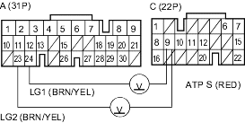
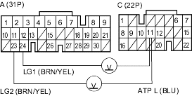
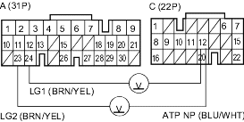

- Shift to
 position.
position.
- Measure the voltage between PCM connector terminals C9 and A23 or A24.
PCM CONNECTORS

Wire side of female terminals
Is there voltage?
YES - Repair open in the wire between PCM connector terminal C9 and the transmission range switch. 
NO - Go to step 11.
- Shift to
 position.
position. - Measure the voltage between PCM connector terminals C11 and A23 or A24.
PCM CONNECTORS

Wire side of female terminals
Is there voltage?
YES - Repair open in the wire between PCM connector terminal C11 and the transmission range switch.
NO - Go to step 13.
- Shift to
 or
or  position.
position.
- Measure the voltage between PCM connector terminals C12 and A23 or A24.
PCM CONNECTORS

Wire side of female terminals
Is there voltage?
YES - Repair open in the wire between PCM connector terminal C12 and the transmission range switch.
NO - Check for loose terminal fit in the PCM connectors. If necessary, substitute a known-good PCM and recheck.